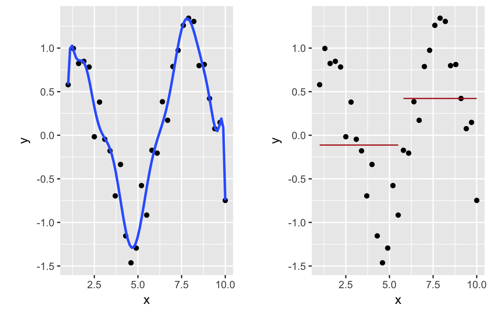

Kapitel 6 Statistisches Modellieren
In diesem Kapitel benötigte Pakete:
library(tidyverse)
require(gridExtra)6.1 Was ist ein Modell? Was ist Modellieren?
Das Leben ist schwer… oder sagen wir: komplex. Um einen Ausschnitt der Wirklichkeit1 zu verstehen, erscheint es sinnvoll, sich einige als wesentlich erachteten Aspekte “herauszugreifen” bzw. auszusuchen und sich nur noch deren Zusammenspiel näher anzuschauen.
Manche Aspekte der Wirklichkeit sind wirklicher als andere. Interessiert man sich für den Zusammenhang von Temperatur und Grundwasserspiegel, so sind diese Dinge direkt beobachtbar. Interessiert man sich hingegen für Lebensqualität und Zufriedenheit, so muss man diese Untersuchungsgegenstände erst konstruieren. Sprechen wir daher von Wirklichkeit lieber vorsichtiger vom Gegenstandsbereich, also den konstruierten Auszug der Wirklichkeit für den sich die forschende Person interessiert. Bestenfalls (er)findet man eine Annäherung an die Wirklichkeit, schlechterenfalls eine verzerrte, gar grob falsche Darstellung2.
Abbildung 6.1: Modellieren
Damit verstehen wir Modellieren als eine typische Aktivität von Menschen (Gigerenzer 1980), genauer eines Menschen mit einem bestimmten Ziel. Wir können gar nicht anders, als nur ein Modell unserer Umwelt zu machen. Vielfältige Medien kommen dazu in Frage: Bilder, Geschichten, Logik, Gleichungen. Wir werden uns hier auf numerische Modelle konzentrieren, weil es dort am einfachsten ist, die Informationen herauszuziehen.
Schauen wir uns ein Beispiel aus der Datenanalyse an; laden Sie dazu zuerst den Datensatz wo_men.
Abbildung 6.2: Ein Beispiel für Modellieren
Im ersten Plot sehen wir - schon übersetzt in eine Datenvisualisierung - den Gegenstandsbereich. Dort sind einige Objekte zusammen mit ihren Relationen abgebildet (Gewicht vs. Körpergröße). Im mittleren Plot sehen wir ein (graphisches) Modell dazu. Noch ist das Modell recht unspezifisch; es wird nur postuliert, dass Körpergröße auf Schuhgröße einen Einfluss hat. Der rechte Plot spezifiziert nun diesen Einfluss: Es wird ein linearer Einfluss (eine Gerade) zwischen Größe und Schuhgröße unterstellt.
Bei einem linearen Modell ist der Zuwachs der Ausgabevariablen konstant. Steigt eine Eingabevariable X um k, so steigt die Ausgabevariable ebenfalls um einen b*k, unabhängig vom Wert von X.
Ein etwas aufwändigeres Modell könnte so aussehen:
Abbildung 6.3: Ein etwas aufwändigeres Modell
Allgemeiner formuliert, haben wir einen oder mehrere Eingabegrößen bzw. Prädiktoren, von denen wir annehmen, dass sie einen Einfluss haben auf genau eine Zielgröße (Ausgabegröße) bzw. Kriterium. Modelle, wie wir sie betrachten werden, postulieren eine quantifizierbaren Zusammenhang zwischen diesen beiden Arten von Größen. Wir gehen dabei nicht davon aus, dass unsere Modelle perfekt sind, sondern dass Fehler passieren. Damit lassen sich unsere Modelle in drei Aspekte gliedern.
Abbildung 6.4: Modelle mit schwarzer Kiste
Die Einflussgrößen werden in einer “schwarzen Kiste”, die wir hier noch nicht näher benennen, irgendwie verwurstet, will sagen, verrechnet, so dass ein geschätzter Wert für das Kriterium, eine Vorhersage “hinten bei rauskommt”. Mathematischer ausgedrückt:
\[Y = f(X) + \epsilon\]
Hier stehen \(Y\) für das Kriterium, \(X\) für den oder die Prädiktoren, \(f\) für die “schwarze Kiste” und \(\epsilon\) für den Fehler, den wir bei unserer Vorhersage begehen. Die schwarze Kiste könnte man auch als die “datengenerierende Maschine” bezeichnen.
Übrigens: Auf das Skalenniveau der Eingabe- bzw. Ausgabegrößen (qualitativ vs. quantitativ) kommt es hier nicht grundsätzlich an; es gibt Modelle für verschiedene Skalenniveaus bzw. Modelle, die recht anspruchslos sind hinsichtlich des Skalenniveaus (sowohl für Eingabe- als auch Ausgabegrößen). Was die Ausgabegröße (das Kriterium) betrifft, so “fühlen” qualitative Variablen von quantitativen Variablen anders an. Ein Beispiel zur Verdeutlichung: “Gehört Herr Bussi-Ness zur Gruppe der Verweigerer oder der Wichtigmacher?” (qualitatives Kriterium); “Wie hoch ist der Wichtigmacher-Score von Herrn Bussi-Ness?” (quantitatives Kriterium). Ein Modell mit qualitativem Kriterium bezeichnet man auch als Klassifikation; ein Modell mit quantitativem Kriterium bezeichnet man auch als Regression. Bei letzterem Begriff ist zu beachten, dass er doppelt verwendet wird. Neben der gerade genannten Bedeutung steht er auch für ein häufig verwendetes Modell - eigentlich das prototypische Modell - für quantitative Kriterien.
6.2 Ziele des Modellierens
Man kann drei Arten von Zielen abgrenzen: Vorhersagen, Erklären und Reduzieren.
Vorhersagen hat das Ziel, eine geschickte Black Box zu wählen (oder eine Black Box geschickt zu wählen), so dass der Vohersagefehler möglichst klein ist. Sicherlich wird der Vorhersagefehler nie Null sein. Das Innenleben der “schwarzen Kiste” interessiert uns hier nicht.
Erklären bedeutet, zu verstehen, wie oder warum sich der Kriteriumswert so verändert, wie er es tut. Auf welche Art werden die Prädiktoren verrechnet, so dass eine bestimmter Kriteriumswert resultiert? Welche Präditkoren sind dabei (besonders) wichtig? Ist die Art der Verrechnung abhängig von den Werten der Prädiktoren? Hierbei interessiert uns vor allem die Beschaffenheit der schwarzen Kiste.
Reduzieren meint, dass man die Fülle des Materials verringert, in dem man ähnliche Dinge zusammenfasst. Dabei kann man sowohl Observationen zusammen fassen (“Britta”, “Carla” und “Dina” zu “Frau” und “Joachim”, “Alois” und “Casper” zu “Mann”) oder auch Variablen zusammen fassen (“Frage 1”, “Frage 2” und “Frage 3” zu “Markentreue” etc.).
Vorhersagen und Erklären haben gemein, dass Eingabegrößen genutzt werden, um Aussagen über einen Ausgabegröße zu treffen. Hat man einen Datensatz, so kann man prüfen, wie gut das Modell funktionert, also wie genau man die Ausgabewerte vorhergesagt hat. Das ist also eine Art “Lernen mit Anleitung” oder angeleitetes Lernen oder geleitetes Modellieren (engl. supervised learning). Abbildung @ref(fig: fig-blackbox) gibt diesen Fall wieder. Soll dem gegenüber das Ziel aber sein, die Daten zu reduzieren, also z.B. Kunden nach Persönlichkeit zu gruppieren, so ist die Lage anders. Es gibt keine Zielgröße. Wir wissen nicht, was die “wahre Kundengruppe” von Herrn Casper Bussi-Ness ist. Wir sagen eher, “OK, die drei Typen sind sich irgendwie ähnlich, sie werden wohl zum selben Typen von Kunden gehören”. Wir tappen in Dunkeln, was die “Warheit” ist. Unser Modell muss ohne Hinweise darauf, was richtig ist auskommen. Man spricht daher in diesem Fall von Lernen ohne Anleitung oder ungeleitetes Modellieren (engl. unsupervised learning).
6.2.1 Modelle zur Erklärung vs. Modelle zur Vorhersage
Man kann statistische Modelle danach unterscheiden, ob sie sich das Innenleben der schwarzen Kiste interessieren oder nicht. Manchmal will man einfach nur (möglichst) gute Vorhersagen treffen; in anderen Situationen will man erklären, warum sich “die Natur” so verhält, wie sie es tut.
Erklären wir das Innenleben der schwarzen Kiste genau, so spricht man von einem Modell zur Erklärung; spezifieren wir das Innenleben der schwarzen Kiste nicht oder weniger genau sondern fokussieren und auf die Vorhersagegüte, so kann man von einem Modell zur Vorhersage sprechen.
Ein Beispiel für ein einfaches “erklärendes Modell” ist:
Für je 5kg Körpergewicht steigt die Schuhgröße um 1 Nummer, wobei 50kg bei Schuhgröße 36 aufgehangen ist.
Was ist hier die Erklärung? Die Erklärung liegt darin, dass wir eine mathematische Funktion unterstellen. Diese mathematische Funktion soll “die Natur”, d.h. den Gegenstandsbereich, widerspiegeln, so unsere Hoffnung.
Ein Beispiel für ein nicht-erkländeres Modell, das sich nur für Vorhersagegüte interessiert, ist:
Schau mal, was die Schuhgröße von Leuten mit ähnlicher Größe ist. Bilde den Mittelwert dieser Schuhgrößen. Gib diesen Mittelwert als Schätzwert an.
Dieses Modell liefert keine “Erklärung”, in dem Sinn, dass eine einfache mathematische Funktion, Eingabe- und Ausgabegröße verbindet. Es werden lediglich Vorhersagen getroffen.
6.3 Wann welches Modell?
Tja, mit dieser Frage lässt sich ein Gutteil des Kopfzerbrechens in diesem Metier erfassen. Die einfache Antwort lautet: Es gibt kein “bestes Modell”, aber es mag für einen bestimmten Gegenstandsbereich, in einem bestimmten (historisch-kulturellen) Kontext, für ein bestimmtes Ziel und mit einer bestimmten Stichprobe ein best mögliches Modell geben. Dazu einige Eckpfeiler:
Unter sonst gleichen Umständen sind einfachere Modelle den komplexeren vorzuziehen. Gott sei Dank.
Je nach Ziel der Modellierung ist ein erklärendes Modell oder ein Modell mit reinem Vorhersge-Charakter vorzuziehen.
Man sollte stets mehrere Modelle vergleichen, um abzuschätzen, welches Modell in der aktuellen Situation geeigneter ist.
6.4 Einfache vs. komplexe Modelle: Unter- vs. Überanpassung
Je komplexer ein Modell, desto besser passt sie meistens auf den Gegenstandsbereich. Eine grobe, holzschnittsartige Theorie ist doch schlechter als eine, die feine Nuancen berücksichtigt, oder nicht? Einiges spricht dafür; aber auch einiges dagegen. Schauen wir uns ein Problem mit komplexen Modellen an.

Abbildung 6.5: Welches Modell passt am besten zu diesen Daten?
Der 1. Plot (links) zeigt den Datensatz ohne Modell; der 2. Plot legt ein lineares Modell (rote Gerade) in die Daten. Der 3. Plot zeigt ein Modell, welches die Daten exakt erklärt - die (blaue) Linie geht durch alle Punkte. Der 4. Plot zeigt ein Modell (grüne Linie), welches die Punkte gut beschreibt, aber nicht exakt trifft.
Welchem Modell würden Sie (am meisten) vertrauen? Das “blaue” Modell beschreibt die Daten sehr gut, aber hat das Modell überhaupt eine “Idee” vom Gegenstandsbereich, eine “Ahnung”, wie Y und X zusammenhängen, bzw. wie X einen Einfluss auf Y ausübt? Offenbar nicht. Das Modell ist “übergenau” oder zu komplex. Man spricht von Überanpassung (engl. overfitting). Das Modell scheint zufälliges, bedeutungsloses Rauschen zu ernst zu nehmen. Das Resultat ist eine zu wackelige Linie - ein schlechtes Modell, da wir wenig Anleitung haben, auf welche Y-Werte wir tippen müssten, wenn wir neue, unbekannte X-Werte bekämen.
Was das “blaue Modell” zu detailverliebt ist, ist das “rote Modell” zu simpel. Die Gerade beschreibt die Y-Werte nur sehr schlecht. Man hätte gleich den Mittelwert von Y als Schätzwert für jedes einzelne \(Y_i\) hernehmen können. Dieses lineare Modell ist unterangepasst, könnte man sagen (engl. underfittting). Auch dieses Modell wird uns wenig helfen können, wenn es darum geht, zukünftige Y-Werte vorherzusagen (gegeben jeweils einen bestimmten X-Wert).
Ah! Das grüne Modell scheint das Wesentliche, die “Essenz” der “Punktebewegung” zu erfassen. Nicht die Details, die kleinen Abweichungen, aber die “große Linie” scheint gut getroffen. Dieses Modell erscheint geeignet, zukünftige Werte gut zu beschreiben. Das grüne Modell ist damit ein Kompromiss aus Einfachheit und Komplexität und würde besonders passen, wenn es darum gehen sollte, zyklische Veränderungen zu erklären3.
Je komplexer ein Modell ist, desto besser beschreibt es einen bekannten Datensatz (Trainings-Stichprobe). Allerdings ist das Modell, welches den Trainings-Datensatz am besten beschreibt, nicht zwangsläufig das Modell, welches neue, unbekannte Daten am besten beschreibt. Oft im Gegenteil!
Je komplexer das Modell, desto kleiner der Fehler im Trainings-Datensatz. Allerdings: Die Fehler-Kurve im Test-Datensatz ist U-förmig: Mit steigender Komplexität wird der Fehler einige Zeit lang kleiner; ab einer gewissen Komplexität steigt der Fehler im Test-Datensatz wieder!
6.5 Bias-Varianz-Abwägung
Einfache Modelle bilden (oft) wesentliche Aspekte des Gegenstandsbereich nicht ab; die Wirklichkeit ist komplex. Die resultierende Verzerrung in den vorhergesagten Werten nennt man auch Bias. Mit anderen Worten: ist ein Modell zu einfach, passt es zu wenig zu den Daten (engl. underfitting). Auf der anderen Seite ist das Modell aber robust in dem Sinne, dass sich die vorhergesagten Werte kaum ändern, falls sich der Trainings-Datensatz etwas ändert.
Ist das Modell aber zu reichhaltig (“komplex”), bildet es alle Details des Trainings-Datensatzes ab, wird es auch zufällige Variation des Datensatzes vorhersagen; Variation, die nicht relevant ist, der nichts Eigentliches abbildet. Das Modell ist “überangepasst” (engl. overfitting); geringfügige Änderungen im Datensatz können das Modell stark verändern. Das Model ist nicht robust. Auf der positiven Seite werden die Nuancen der Daten gut abgebildet; der Bias ist gering bzw. tendenziell geringer als bei einfachen Modellen.
Einfache Modelle: Viel Bias, wenig Varianz. Komplexe Modelle: Wenig Bias, viel Varianz.
Dieser Sachverhalt ist in folgendem Diagramm dargestellt4.

Der linke Plot zeigt ein komplexes Modell5; das Modell (blaue Linie) erscheint “zittrig”; kleine Änderungen in den Daten könnnen große Auswirkungen auf das Modell (Verlauf der blauen Linie) haben. Darüber hinaus sind einige Details des Modells unplausibel: es gibt viele kleine “Hügel”, die nicht augenscheinlich plausibel sind.
Der Plot auf der rechten Seiten hingegen ist sehr einfach und robust. Änderungen in den Daten werden vergleichweise wenig Einfluss auf das Modell (die beiden roten Linien) haben.
6.6 Training- vs. Test-Stichprobe
Wie wir gerade gesehen haben, kann man immer ein Modell finden, welches die vorhandenen Daten sehr gut beschreibt. Das gleicht der Tatsache, dass man im Nachhinein (also bei vorhandenen Daten) leicht eine Erklärung findet. Ob diese Erklärung sich in der Zukunft, bei unbekannten Daten bewahrheitet, steht auf einem ganz anderen Blatt.
Daher sollte man immer sein Modell an einer Stichprobe entwickeln (“trainieren” oder “üben”) und an einer zweiten Stichprobe testen. Die erste Stichrpobe nennt man auch training sample (Trainings-Stichprobe) und die zweite test sample (Test-Stichprobe). Entscheidend ist, dass das Test-Sample beim Entwickeln des Modells unbekannt war bzw. nicht verwendet wurde.
Die Güte des Modells sollte nur anhand eines - bislang nicht verwendeten - Test-Samples überprüft werden. Das Test-Sample darf bis zur Modellüberprüfung nicht analysiert werden.
Die Modellgüte ist im Trainings-Sample meist deutlich besser als im Test-Sample (vgl. die Fallstudie dazu: @ref(overfitting_casestudy) [Fallstudie zu Overfitting]).
set.seed(42)
train <- wo_men %>%
sample_frac(.8, replace = FALSE) # Stichprobe von 80%, ohne Zurücklegen
test <- wo_men %>%
anti_join(train) # Alle Zeilen von "wo_men", die nicht in "train" vorkommenDamit haben wir ein Trainings-Sample (train), in dem wir ein oder besser mehrere Modelle entwickeln können.
So schön wie dieses Vorgehen auch ist, es ist nicht perfekt. Ein Nachteil ist, dass unsere Modellgüte wohl anders wäre, hätten wir andere Fälle im Test-Sample erwischt. Würden wir also ein neues Trainings-Sample und ein neues Test-Sample aus diesen Datensatz ziehen, so hätten wir wohl andere Ergebnisse. Was wenn diese Ergebnisse nun deutlich von den ersten abweichen? Dann würde unser Vertrauen in die die Modellgüte sinken. Wir bräuchten also noch ein Verfahren, welches Variabilität in der Modellgüte widerspiegelt.
6.7 Modellgüte
Wie “gut” ist mein Modell? Modelle bewerten bzw. vergleichend bewerten ist einer der wichtigsten Aufgaben beim Modellieren. Die Frage der Modellgüte hat viele feine technisch-statistische Verästelungen, aber einige wesentlichen Aspekte kann man gut zusammenfassen.
Kriterium der theoretischen Plausibilität: Ein statistisches Modell sollte theoretisch plausibel sein.
Anstelle “alles mit allem” durchzuprobieren, sollte man sich auf Modelle konzentrieren, die theoretisch plausibel sind. Die Modellwahl ist theoretisch zu begründen.
Kriterium der guten Vorhersage: Die Vorhersagen eines Modells sollen präzise und überraschend sein.
Dass ein Modell die Wirklichkeit präzise vorhersagen soll, liegt auf der Hand. Hier verdient nur der Term vorhersagen Beachtung. Es ist einfach, im Nachhinein Fakten (Daten) zu erklären. Jede Nachbesprechung eines Bundesliga-Spiels liefert reichlich Gelegenheit, posthoc Erklärungen zu hören. Schwieriger sind Vorhersagen6. Die Modellgüte ist also idealerweise an in der Zukunft liegende Ereignisse bzw. deren Vorhersage zu messen. Zur Not kann man auch schon in der Vergangenheit angefallende Daten hernehmen. Dann müssen diese Daten aber für das Modell neu sein.
Was ist mit überraschend gemeint? Eine Vorhersage, dass die Temperatur morgen in Nürnberg zwischen -30 und +40°C liegen wird, ist sicherlich sehr treffend, aber nicht unbedingt präzise und nicht wirklich überraschen. Die Vorhersage, dass der nächste Chef der Maurer-Innung (wenn es diese geben sollte) ein Mann sein wird, und nicht eine Frau, kann zwar präzise sein, ist aber nicht überraschend. Wir werden also in dem Maße unseren Hut vor dem Modell ziehen, wenn die Vorhersagen sowohl präzise als auch überraschen sind. Dazu später mehr Details.
Kriterium der Situationsangemessenheit: Die Güte des Modells ist auf die konkrete Situation abzustellen.
Ein Klassifikationsmodell muss anders beurteilt werden als ein Regressionsmodell. Reduktionsmodelle müssen wiederum anders beurteilt werden. In den entsprechenden Kapiteln werden diese Unterschiede präzisiert.
Literaturverzeichnis
Gigerenzer, Gerd. 1980. Messung Und Modellbildung in Der Psychologie (Uni-Taschenbucher. Psychologie, Padagogik, Soziologie, Psychiatrie) (German Edition). E. Reinhardt. https://www.amazon.com/Modellbildung-Psychologie-Uni-Taschenbucher-Soziologie-Psychiatrie/dp/3497008958%3FSubscriptionId%3D0JYN1NVW651KCA56C102%26tag%3Dtechkie-20%26linkCode%3Dxm2%26camp%3D2025%26creative%3D165953%26creativeASIN%3D3497008958.
Unter “Wirklichkeit” sei hier ein beliebiges empirisches System vorhanden, mit einer Menge von Objekten O und einer Menge von Beziehungen (Relationen) R zwischen den Objekten.↩
Da keine Wiedergabe der Wirklichkeit perfekt ist, sind streng genommen alle Modelle “falsch” in diesem Sinne.↩
Tatsächlich wurden die Y-Werte als Sinus-Funktion plus etwas normalverteiltes Rauschen simuliert.↩
Genauer gesagt ein Polynom vom Grad 15.↩
Gerade wenn sie die Zukunft betreffen; ein Bonmot, das Yogi Berra nachgesagt wird.↩